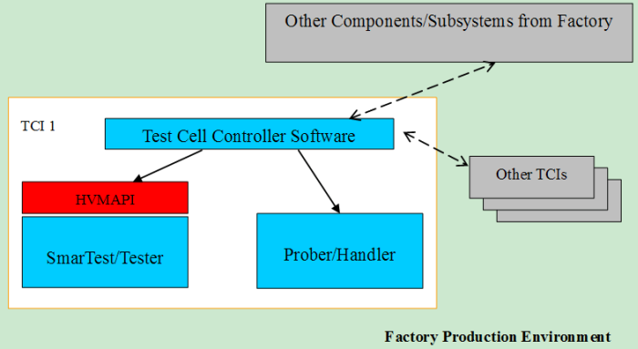
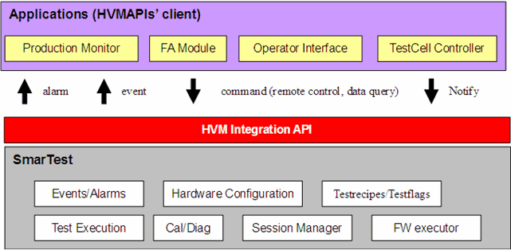

HVM API Introduction
The High Volume Manufacture Integration API provides a set of application programming interfaces which allow external programs to interface with the SmarTest execution environment.
In the past SmarTest did not provide interfaces for external control or notification of execution status. It is difficult to implement software for monitoring the high volume production environment and manufacturing control.
With the HVM API library, you can access the SmarTest execution event information. You can also control the execution using software designed to control SmarTest via external commands.
With the HVM API you can construct complex applications with a high degree of flexibility for both monitoring system execution as well as controlling the operation of the test cells.
One example of a controlling application is a test cell controller interface module. By developing an interface which communicates with a customer's cell controller, the HVM API interface allows SmarTest to work in a passive manner and respond to the external commands. The figure below shows the application in test cell integration.

Besides the applications in test cell integration, there is a wide range of additional applications for the HVM API library. This includes
- production monitoring tools used to track system utilization
- FA (factory automation) interfaces which use industry standard protocols to control the testing
- and other interface development which requires status information from SmarTest.
The figure below shows an overview of the HVM API clients.

The HVM API can be grouped into four categories according to their capability:
- SmarTest Session Management API
These commands kick off and kill SmarTest, get SmarTest profile information and retrieve the SmarTest status.
Note Switching SmarTest versions is not supported in HVM API. If you want to switch to another SmarTest version, you need to do it manually. (See Switch version tool.) - Test Execution API
These commands set a device and test program, control the execution of the test program, test flow and BLC, generate the related event and notify the event to SmarTest.
- Hardware Information API
These commands return the current hardware configuration information.
- Calibration and Diagnostic API
These APIs return the calibration status and execute the DC update calibration.
Alternatively, the HVM API can be grouped into five categories of APIs according to their behavior:
- Remote control commands
These commands work in asynchronous way. (See asynchronous command in Terminology) They control the SmarTest life cycle, change the test setups, execute the device test and so on.
- Synchronous control commands
These commands work in a synchronous way. They are mainly used in the Batch/Lot Control.
- Data query commands
These commands retrieve data from SmarTest and V93000 test system, like test system information and test floor information.
- Notification commands
These commands enable the customer production software to proactively notify its state to SmarTest.
- Event notifications
These notifications allow SmarTest to notify its status to the client via asynchronous event.
- Alarm notifications
These notifications allow SmarTest to notify alarms via asynchronous event. The alarm specifies any failure from SmarTest.
These HVM APIs are represented with the universal signatures (See signature in Terminology):
command:trigger the execution of remote control command of HVM API that has no output value.
operation:trigger the execution of remote control command of HVM API that has the output value.
syncCommand: trigger the execution of synchronous control command that has no output value.
syncOperation: trigger the execution of synchronous control command that has output values.
query:trigger the execution of remote control command of HVM API that has the output value.
notify:enable the customer production software to proactively notify its state to SmarTest.
EventListenerType:define the prototype of call back function (event handler).
addEventListener:register an event listener which will be executed by HVM API internal execution thread upon a particular event.
eventLoop: start an HVMAPI intenal event loop.
eventLoopExit: exit the HVMAPI internal event loop.